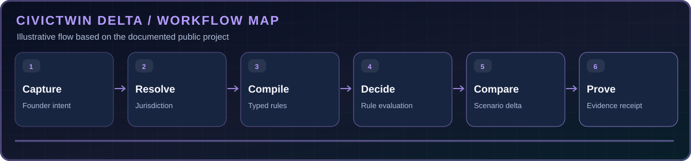

SOURCE-AWARE
Links requirements to official source metadata and retrieval dates.
A regulatory scenario twin that makes rule changes, evidence boundaries and unknowns visible.
A regulatory scenario twin that makes rule changes, evidence boundaries and unknowns visible. See the source code and documentation for the latest supported features.
Links requirements to official source metadata and retrieval dates.
See how changing a single operating fact changes applicable rules.
Keep missing values UNKNOWN and flag human-review boundaries.
Support clearer founder descriptions and guided clarification.
Conceptual workflow aligned to the project's published documentation.

Collect founder description in speech or text
Determine relevant context and jurisdiction
Turn evidence into reviewable typed rules
Evaluate conditions and requirements
Show added, removed, unchanged and unknown
Attach source metadata and proof receipt
Installation excerpt from the source repository. Open the README for all requirements.
npm install && npm run devAn illustrative comparison documented in the original project's README, not a live screenshot.
STILL UNKNOWN: exact pushcart fee — manual evidence confirmation required
A controlled prototype, not legal advice. Illustrative scenario from the README: changing vending time 60 → 30 minutes removes a modeled restroom-agreement dependency while the exact fee stays UNKNOWN.
This case-study page is a portfolio explainer, not a replacement for the active project's README. The source is now hosted under @theihtishaam, with original history preserved.